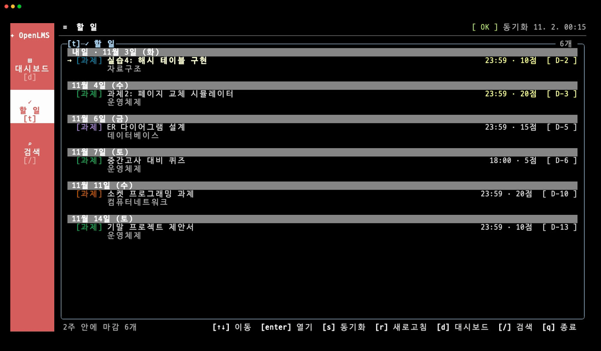
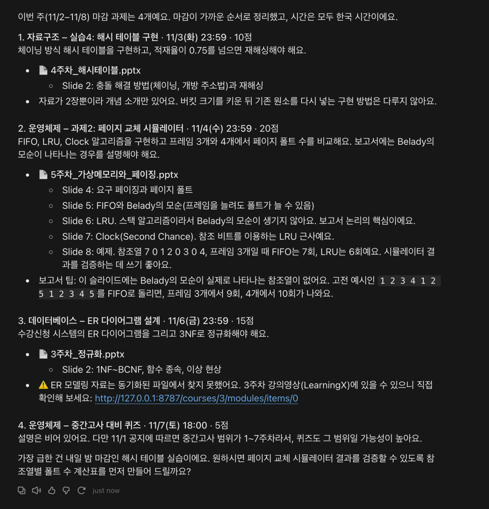

OpenLMS 시작하기
코딩을 몰라도 순서대로 따라 하면 됩니다. 강의자료를 내 컴퓨터로 받고, Claude Desktop에서 강의자료에 관해 질문할 수 있게 만듭니다. 명령어는 복사해서 붙여 넣으면 됩니다.
-
Node.js 설치
OpenLMS를 실행하는 데 필요한 프로그램입니다. Node.js 다운로드 페이지 맨 위에서 버전을 v24 (LTS)로 고릅니다. 페이지에 보이는 명령어는 쓰지 않아도 됩니다. 조금 아래의 설치 프로그램 버튼(Mac은
.pkg, Windows는.msi)으로 파일을 받아 실행하고, 설치 화면은 기본값 그대로 넘기면 됩니다.이미 설치했다면 22.13 이상인지만 확인하세요. 다음 단계에서 터미널을 열어
node --version으로 볼 수 있습니다. -
터미널을 열고 OpenLMS 설치
- Mac:
Cmd + Space를 누르고 터미널을 검색해 엽니다. - Windows: 시작 메뉴에서 명령 프롬프트를 검색해 엽니다.
아래 명령을 붙여 넣고 Enter를 누릅니다. 1분 안팎 걸립니다.
npm install -g openlms
이 터미널 창은 닫지 말고 계속 쓰세요.
- Mac:
-
Canvas 토큰 발급
OpenLMS가 내 계정으로 LMS를 읽을 때 쓰는 열쇠입니다. 토큰 발급 가이드의 1~4단계를 따라 토큰을 복사해 두세요.
토큰은 비밀번호처럼 다루세요. 다른 사람에게 보내거나 게시판에 올리면 안 됩니다.
-
로그인
openlms login
두 가지를 차례로 묻습니다.
- LMS base URL: 학교 LMS의 주소입니다. 브라우저 주소창에서
https://canvas.학교.ac.kr처럼 첫 번째/앞까지만 입력합니다. - Access token: 복사한 토큰을 붙여 넣습니다. 입력해도 화면에 보이지 않는 것이 정상이니, 붙여 넣고 그대로 Enter를 누르세요.
토큰은 파일이 아니라 운영체제의 키체인에 저장됩니다.
- LMS base URL: 학교 LMS의 주소입니다. 브라우저 주소창에서
-
강의자료 받기
openlms sync --learningx
과목, 강의자료, 과제, 공지, 게시판을 내 컴퓨터로 받습니다. 처음에는 자료 양에 따라 몇 분 걸릴 수 있습니다. 다음부터는 바뀐 파일만 받습니다.
끝나면 터미널에서 바로 볼 수 있습니다. 나올 때는
q를 누릅니다.openlms tui

샘플 데이터 화면입니다.
-
Claude Desktop에 연결
Claude Desktop을 설치하고 로그인합니다. 그다음 터미널에 아래 명령을 붙여 넣으면 내 컴퓨터에 맞는 설정이 출력됩니다.
node -e "console.log(JSON.stringify({mcpServers:{openlms:{command:process.execPath,args:[require('path').join(require('child_process').execSync('npm root -g').toString().trim(),'openlms','dist','cli.js'),'mcp']}}},null,2))"출력된 내용을 처음의
{부터 마지막}까지 복사한 뒤, 설정 파일에 넣습니다.- Claude Desktop의 메뉴에서 Settings… → Developer → Edit Config를 누릅니다. 설정 파일
claude_desktop_config.json의 위치가 열립니다. - 그 파일을 메모장이나 텍스트 편집기로 엽니다.
- 파일이 비어 있거나
{}뿐이면 전체를 복사한 내용으로 바꾸고 저장합니다. 다른 내용이 있으면 아래 설정 파일에 이미 내용이 있을 때를 보세요. - Claude Desktop을 완전히 종료했다가 다시 엽니다. 창만 닫으면 적용되지 않습니다.
- Claude Desktop의 메뉴에서 Settings… → Developer → Edit Config를 누릅니다. 설정 파일
-
질문해 보기
새 채팅을 열고 물어보세요. 처음에는 도구 사용을 승인하는 창이 뜰 수 있으니 허용하면 됩니다.
이번 주 마감 과제 정리하고, 과제에 필요한 개념이 어느 강의자료에 있는지 찾아줘

샘플 데이터로 받은 답변입니다.
꼭 알아 두세요
- 동기화와 검색은 내 컴퓨터에서 이루어지지만, AI에게 질문하면 답변에 필요한 자료 내용이 그 AI 서비스로 전달됩니다.
- 받은 강의자료는 개인 학습용으로만 쓰고 다시 배포하지 마세요.
- OpenLMS는 학교나 Canvas의 공식 서비스가 아닙니다. 학교 이용 약관은 직접 확인해 주세요.
- 스캔본 PDF와 영상의 내용은 검색되지 않습니다.
막혔을 때
npm이나 openlms를 찾을 수 없다고 나올 때
터미널 창을 닫고 새로 연 뒤 다시 실행하세요. 그래도 안 되면 Node.js를 다시 설치해 보세요.
Mac에서 EACCES 또는 permission denied가 나올 때
아래 명령으로 설치하세요. Mac 로그인 비밀번호를 묻는데, 입력해도 화면에 보이지 않는 것이 정상입니다.
sudo npm install -g openlms
Windows에서 "스크립트를 실행할 수 없으므로"가 나올 때
PowerShell에서 실행한 경우입니다. 명령 프롬프트를 새로 열어 다시 실행하세요.
설정 파일에 이미 내용이 있을 때
기존 내용을 지우지 말고, 출력된 "openlms": { … } 부분만 "mcpServers" 안에 추가합니다. "mcpServers"가 없다면 맨 바깥 { } 안에 항목으로 넣습니다. 항목 사이에는 쉼표가 필요합니다.
{
"기존 항목": "그대로 둡니다",
"mcpServers": {
"openlms": { 출력된 command와 args }
}
}Claude가 강의자료를 못 찾을 때
- 쉼표나 괄호가 빠지면 설정 전체가 읽히지 않습니다. 설정 파일을 다시 확인하세요.
- Claude Desktop을 완전히 종료했다가 다시 열었는지 확인하세요.
- 채팅 입력창의 + 메뉴에서 Connectors를 열어
openlms가 있는지 확인하세요. - 터미널에서
openlms status를 실행해 로그인과 파일 수를 확인하세요.
로그인에서 오류가 날 때
주소가 https://로 시작하고 학교 LMS 주소가 맞는지, 토큰을 끝까지 복사했는지 확인하세요. 학교가 토큰 발급을 막아 둔 경우에는 사용할 수 없습니다.
그래도 안 될 때
GitHub Issues에 어느 단계에서 어떤 메시지가 나왔는지 남겨 주세요. 토큰과 개인정보는 지우고 올려 주세요.
평소에 쓰기
- 새 자료 받기:
openlms sync --learningx - 새 버전으로 업데이트:
npm install -g openlms@latest - 저장된 토큰 지우기:
openlms logout - Claude Desktop 말고 Cursor나 Claude Code에 연결하려면 README를 보세요.